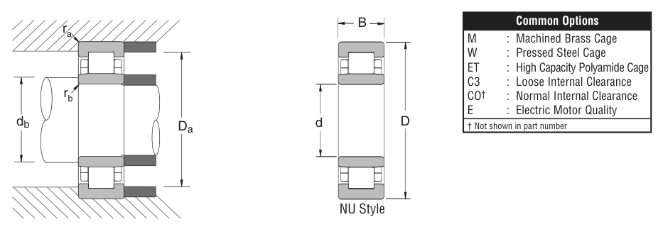

2214 is a NSK cylindrical roller bearing, bore 70 mm, O.D. 125 mm, width 31 mm, dynamic rating 26,800 lbs. Dimensions, drawing, interchanges and price.
Original catalogue drawing - NSK catalogue, page 61

Scanned from the manufacturer catalogue page listing this part number. All part numbers printed on that table share the same drawing.
Scale cross-section
Blue = inner / outer ring, yellow = rolling element. Drawn to scale from this part's own
dimensions for selection reference only - not a manufacturing or assembly drawing.
Dimension table (mm / inch)
Symbol
Dimension
mm
inch
d
Bore diameter
70
2.7559
D
Outside diameter
125
4.9213
B
Inner-ring / bearing width
31
1.2205
Notes
Cylindrical roller entries from the NSK inch catalogue are series numbers covering the N / NU / NJ / NUP / NH prefixes of the same size. Weights are given in kg. Load ratings are shown in both the original catalogue units and the converted value (1 N = 0.2248 lbf). Data is provided for selection reference only - confirm against the latest official catalogue before ordering.
Main dimensions
Bore d (mm)
70
Bore d (in)
2.7559
Outside dia. D (mm)
125
Outside dia. D (in)
4.9213
Width B (mm)
31
Width B (in)
1.2205
Load ratings & speeds
Basic dynamic load rating Cr (lbs)
26800
Basic static load rating Cor (lbs)
33900
Limiting speed - grease (rpm)
4,500
Limiting speed - oil (rpm)
5,600
Weight
Weight (kg)
1.506
Mounting dimensions (fillets / shoulders)
Fillet ra max (in)
0.059
Fillet rb max (in)
0.059
Shaft shoulder da min (in)
3.071
Housing shoulder Da max (in)
4.606
Shaft shoulder db min (in)
3.071
Bearing life (ISO 281 basic rating life)
C / P
Equivalent load P (N)
L10 (106 rev)
L10h at 1,500 rpm
4
29,803
102
1,129
6
19,869
392
4,361
8
14,902
1,024
11,378
10
11,921
2,154
23,938
15
7,947
8,323
92,483
Basic rating life per ISO 281: L10 = (C/P)10/3 with C = 119,212 N. Hours = L10 x 106 / (60n). Life-modification factors for lubrication, contamination and temperature (aISO) are not included.
Source & traceability
Brand
NSK
Source catalogue
NSK inch product catalogue
Catalogue page
p.63 (dimensions) / p.64 (ratings)
Dimensions in inches and millimetres, load ratings in lbs.
Send us the quantity you need and we will come back with price and
lead time, normally within 24 hours. Equivalent parts from other brands can be quoted at the same time.